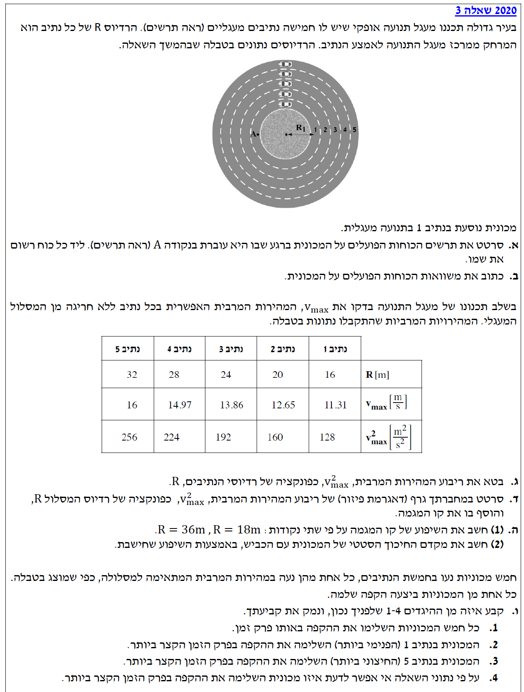

פתרון בגרות בפיזיקה - מכניקה 2020, שאלה 3
עודכן:
--- --:--:--
תלמידים יקרים, השאלה שלפנינו עוסקת בתנועה מעגלית אופקית.
מכונית נעה במסלול מעגלי על כביש שטוח (ללא שיפוע). הכוח המאפשר לה לבצע את התנועה המעגלית ולשנות את כיוון המהירות שלה מבלי להחליק החוצה, הוא כוח החיכוך הסטטי בין הצמיגים לכביש. אנו ננתח את הכוחות, נבנה משוואות תנועה, ונבין את הקשר שבין רדיוס המסלול למהירות המרבית המותרת באמצעות ניתוח גרפי.

שגיאה בטעינת תמונת השאלה (question-image.png). אנא וודאו שהקובץ נמצא בתיקייה הנכונה.
מה נתון: המכונית נמצאת בנקודה A (בחלק השמאלי של נתיב 1 בתרשים). המכונית נעה בתנועה מעגלית אופקית סביב מרכז המסלול שנמצא מימינה.
מה מחפשים: לשרטט תרשים כוחות (FBD - Free Body Diagram) הפועלים על המכונית ברגע שהיא בנקודה A, ולרשום את שם הכוח ליד כל וקטור.
נוסחאות ועקרונות בשימוש:
כדי לגוף תהיה תאוצה רדיאלית (הדרושה לתנועה מעגלית), חייב לפעול עליו כוח שקול לכיוון מרכז המעגל.
הצבה ופתרון:
על המכונית פועלים שלושה כוחות. נבחר מבט המציג את המכונית מאחור (או מלפנים) כך שמרכז המעגל נמצא מימין למכונית (מכיוון שהיא בנקודה A השמאלית):
- כוח הכובד \(\vec{mg}\): פועל כלפי מטה (לכיוון מרכז כדור הארץ).
- הכוח הנורמלי \(\vec{N}\): מופעל על ידי הכביש, פועל כלפי מעלה (בניצב למשטח).
- כוח חיכוך סטטי \(\vec{f_s}\): מופעל על ידי הכביש, מצביע אל כיוון מרכז המעגל (ימינה בתרשים שלנו) כדי למנוע החלקה רדיאלית.
תרשים הכוחות משורטט מעלה. הכוחות הם: כוח הנורמל \(N\), כוח הכובד \(mg\), וכוח החיכוך הסטטי \(f_s\) המכוון למרכז המסלול.
מדוע מדובר בחיכוך סטטי ולא קינטי? למרות שהמכונית בתנועה (נוסעת קדימה), הצמיגים אינם מחליקים הצידה (בכיוון הרדיאלי). נקודת המגע של הצמיג עם הכביש נמצאת במנוחה רגעית יחסית לכביש בכיוון זה, ולכן החיכוך המונע את החלקת הרכב החוצה הוא חיכוך סטטי.
מה נתון: תרשים הכוחות מהסעיף הקודם. נגדיר מערכת צירים: ציר \(y\) אנכי (חיובי כלפי מעלה), וציר \(x\) רדיאלי (חיובי כלפי מרכז המעגל).
מה מחפשים: לכתוב את משוואות החוק השני של ניוטון עבור המכונית בשני הצירים.
נוסחאות ועקרונות בשימוש:
\(\Sigma\vec{F} = m\vec{a}\)
\(a_R = \frac{v^2}{R}\)
בציר האנכי (\(y\)) אין תנועה ולכן אין תאוצה (\(a_y = 0\)). בציר הרדיאלי (\(x\)) קיימת תאוצה רדיאלית המחזיקה את הרכב במסלול המעגלי.
הצבה ופתרון:
בציר האנכי (\(y\)):
\[ \Sigma F_y = m a_y = 0 \]
\[ N - mg = 0 \implies N = mg \]
בציר הרדיאלי (\(x\)) הפונה אל המרכז:
\[ \Sigma F_x = m a_R \]
\[ f_s = m \frac{v^2}{R} \]
משוואות התנועה:
ציר Y: \(\quad N = mg\)
ציר X (רדיאלי): \(\quad f_s = m \frac{v^2}{R}\)
שימו לב! לעולם אל תרשמו "כוח צנטריפטלי" ככוח נוסף בתרשים הכוחות. כוח צנטריפטלי אינו כוח בפני עצמו, אלא תפקיד שממלאים הכוחות הפיזיקליים הקיימים (במקרה שלנו, כוח החיכוך הסטטי \(f_s\)).
מה נתון: המשוואות מסעיף ב'. אנו מחפשים כעת את מצב הקיצון - המהירות המרבית (\(v_{\max}\)) שבה המכונית יכולה לנוע ללא החלקה.
מה מחפשים: לבטא את \(v_{\max}^2\) כפונקציה של רדיוס הנתיב \(R\).
נוסחאות ועקרונות בשימוש:
\(f_s \le \mu_s N\)
במהירות המרבית האפשרית, כוח החיכוך הסטטי מגיע לערכו המקסימלי: \(f_{s,\max} = \mu_s N\).
הצבה ופתרון:
נציב את הביטוי לחיכוך הסטטי המקסימלי במשוואת הציר הרדיאלי:
\[ f_{s,\max} = m \frac{v_{\max}^2}{R} \]
\[ \mu_s N = m \frac{v_{\max}^2}{R} \]
כעת, נציב את הביטוי שמצאנו עבור הכוח הנורמלי (\(N = mg\)):
\[ \mu_s (mg) = m \frac{v_{\max}^2}{R} \]
נצמצם את מסת המכונית \(m\) משני אגפי המשוואה (הנחה שמסת המכונית אינה אפס):
\[ \mu_s g = \frac{v_{\max}^2}{R} \]
נכפול ב-\(R\) כדי לבודד את ריבוע המהירות:
\[ v_{\max}^2 = \mu_s g \cdot R \]
\[ v_{\max}^2 = \mu_s g R \]
שימו לב שמסת המכונית הצטמצמה! המשמעות הפיזיקלית היא שהמהירות המרבית המותרת בסיבוב אינה תלויה במסת הרכב. משאית ומכונית פרטית יחליקו החוצה באותה המהירות (בהנחה שמקדם החיכוך ביניהם לכביש זהה). כמו כן, קיבלנו קשר ליניארי מהצורה \(y = mx\), כאשר \(y = v_{\max}^2\), \(x = R\), והשיפוע הוא \(\mu_s g\).
טיפ חשוב: זיהוי נתונים מוסתרים בניסוח השאלה
קראו בעיון את ניסוח השאלה. לעיתים מילים כמו "מינימלי", "מקסימלי", "סף תנועה" או "על סף החלקה" רומזות על נתון פיזיקלי שלא נכתב במפורש. בבעיה שלנו, הביטוי "מהירות מרבית" מלמד שהמכונית נמצאת בדיוק בגבול שבו כוח החיכוך הסטטי מגיע לערכו המקסימלי. לכן כאן מותר לכתוב \(f_s = f_{s,\max} = \mu_s N\), ולא רק \(f_s \le \mu_s N\). זהו הנתון הסמוי שצריך לזהות כדי לבחור את המשוואה הנכונה.
מה נתון: טבלת נתונים של רדיוס המסלול \(R\) ביחידות \([\text{m}]\) וריבוע המהירות המרבית \(v_{\max}^2\) ביחידות \(\left[\frac{\text{m}^2}{\text{s}^2}\right]\).
| נתיב |
1 |
2 |
3 |
4 |
5 |
| \(R [\text{m}]\) |
16 |
20 |
24 |
28 |
32 |
| \(v_{\max}^2 \left[\frac{\text{m}^2}{\text{s}^2}\right]\) |
128 |
160 |
192 |
224 |
256 |
מה מחפשים: לסרטט גרף פיזור של \(v_{\max}^2\) כפונקציה של \(R\) ולהוסיף קו מגמה.
נוסחאות ועקרונות בשימוש:
משוואת ישר: \(y = mx + b\). במקרה שלנו מסעיף ג', הציפייה התיאורטית היא לישר העובר בראשית (כלומר \(b=0\)), כיוון ש- \(v_{\max}^2 = (\mu_s g) \cdot R\).
הצבה ופתרון:
נסמן את הנקודות במערכת צירים ונמתח קו מגמה העובר ביניהן (ובראשית הצירים).
גרף קו המגמה שורטט בהצלחה. ניתן לראות כי מדובר בישר העובר בראשית הצירים, תואם לציפייה התיאורטית.
זכרו חוק יסוד בסרטוט גרפים בפיזיקה: תמיד יש לתת שמות לצירים כולל יחידות מידה בתוך סוגריים מרובעים. כמו כן, פיזור הנקודות על פני הגרף חייב להיות רחב כדי לנצל את רוב שטח המשבצות.
מה נתון: הגרף שסרטטנו בסעיף ד'. השאלה מבקשת לחשב את השיפוע על סמך שתי נקודות הנמצאות על קו המגמה (ולא בהכרח מתוך טבלת הנתונים):
\(R_1 = 18\text{ m}, \quad R_2 = 36\text{ m}\).
תאוצת הכובד היא \(g = 10\text{ m/s}^2\).
מה מחפשים:
1) את שיפוע קו המגמה בעזרת שתי הנקודות הנתונות.
2) את מקדם החיכוך הסטטי \(\mu_s\).
נוסחאות ועקרונות בשימוש:
\(m = \frac{\Delta y}{\Delta x} = \frac{y_2 - y_1}{x_2 - x_1}\)
הצבה ופתרון (חלק 1 - שיפוע):
מכיוון שמבקשים למצוא את השיפוע מן הגרף, ניגש אל קו המגמה ונקרא ממנו את ערכי \(y\) המתאימים לשני ערכי \(R\) שנתנו לנו.
מן הגרף נקרא בקירוב:
עבור \(R_1 = 18\text{ m}\): \(y_1 \approx 144\frac{\text{m}^2}{\text{s}^2}\)
עבור \(R_2 = 36\text{ m}\): \(y_2 \approx 288\frac{\text{m}^2}{\text{s}^2}\)
כעת נחשב את השיפוע בעזרת שתי הנקודות שקראנו מן הגרף:
\[ m = \frac{\Delta y}{\Delta x} = \frac{288 - 144}{36 - 18} = \frac{144}{18} = 8\frac{\text{m}}{\text{s}^2} \]
הצבה ופתרון (חלק 2 - מקדם החיכוך):
מסעיף ג' הראינו כי פונקציית הגרף היא:
\[ v_{\max}^2 = (\mu_s g) \cdot R \]
לכן, על פי השוואת מקדמים של משוואת קו ישר (\(y = \text{Slope} \cdot x\)), מתקיים הקשר:
\[ m = \mu_s \cdot g \]
נציב את הערכים הידועים לנו (\(m = 8\), \(g = 10\)):
\[ 8 = \mu_s \cdot 10 \]
\[ \mu_s = \frac{8}{10} = 0.8 \]
1) שיפוע קו המגמה הוא \(8.00 \text{ m/s}^2\).
2) מקדם החיכוך הסטטי בין המכונית לכביש הוא \(\mu_s = 0.800\) (גודל חסר יחידות).
שימו לב ליחידות המידה של השיפוע! חלוקה של ציר Y בציר X:
\[ \frac{\text{m}^2/\text{s}^2}{\text{m}} = \frac{\text{m}}{\text{s}^2} \]
אלו הן יחידות של תאוצה. ואכן, מצאנו שהשיפוע שווה ל-\(\mu_s g\), שזה מכפלה של מספר טהור (\(\mu_s\)) בתאוצה (\(g\)), כך שהיחידות מסתדרות באופן מושלם. תמיד כדאי לעשות "בדיקת ממדים" כדי לוודא שלא טעינו בפיתוח האלגברי!
מה נתון: חמש מכוניות נעות במקביל, כל אחת בנתיב שלה (מ-1 עד 5), וכל אחת נוסעת במהירות המרבית המותרת לה. כלומר, כל מכונית מקיימת את הקשר \(v = \sqrt{\mu_s g R}\).
מה מחפשים: לקבוע איזו מבין ארבעת ההיגדים נכון, כלומר להכריע לאיזו מכונית זמן ההקפה השלמה (\(T\)) הקצר ביותר, ולנמק.
נוסחאות ועקרונות בשימוש:
\(v = \frac{2\pi R}{T}\)
הצבה ופתרון:
נפתח ביטוי לזמן המחזור \(T\) כפונקציה של רדיוס הנתיב \(R\).
מתוך נוסחת המהירות הקווית בתנועה מעגלית נבודד את \(T\):
\[ T = \frac{2\pi R}{v_{\max}} \]
נציב את הביטוי למהירות המרבית שמצאנו קודם (\(v_{\max} = \sqrt{\mu_s g R}\)):
\[ T = \frac{2\pi R}{\sqrt{\mu_s g R}} \]
נצמצם את \(R\) שבמונה עם \(\sqrt{R}\) שבמכנה (\(R = \sqrt{R} \cdot \sqrt{R}\)):
\[ T = 2\pi \sqrt{\frac{R}{\mu_s g}} \]
מכאן אנו רואים יחס ברור: הזמן \(T\) עומד ביחס ישר לשורש הרדיוס \(\sqrt{R}\) (הרי \(\pi, \mu_s, g\) הם קבועים).
משמעות הקשר היא: ככל שהרדיוס \(R\) קטן יותר, כך זמן ההקפה \(T\) קטן יותר.
על פי הנתונים, נתיב 1 הוא הנתיב הפנימי ביותר ולכן בעל הרדיוס הקטן ביותר. לכן, המכונית בנתיב 1 תשלים את ההקפה בזמן הקצר ביותר.
ההיגד הנכון הוא מספר 2: "המכונית בנתיב 1 (הפנימי ביותר) השלימה את ההקפה בפרק הזמן הקצר ביותר".
זוהי מלכודת אינטואיציה קלאסית! אפשר בטעות לחשוב: "המכונית בנתיב החיצוני (5) נוסעת הכי מהר, לכן היא תסיים ראשונה". אבל המרחק שהיא צריכה לעבור (ההיקף \(2\pi R\)) גדל בצורה משמעותית יותר מאשר המהירות שלה (שגדלה רק לפי שורש \(R\)). לכן תמיד חייבים לכתוב ביטוי אלגברי מפורש המקשר בין מה שמחפשים (\(T\)) לבין הגורם המשתנה בין המקרים (\(R\)), ולא להסתמך רק על תחושת בטן.